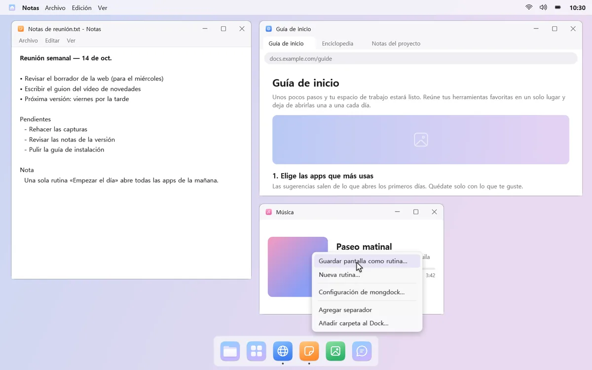
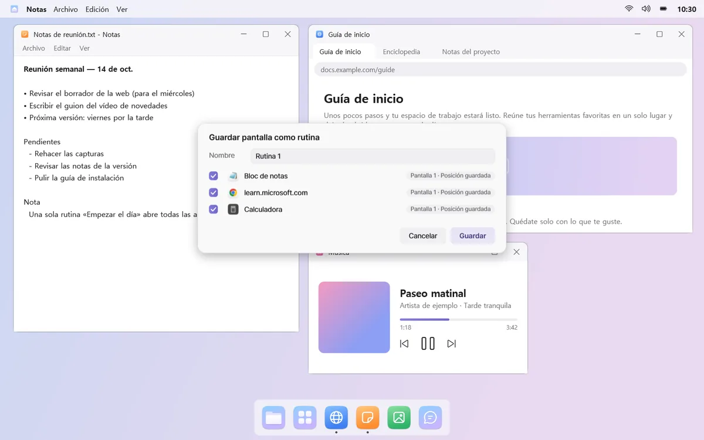
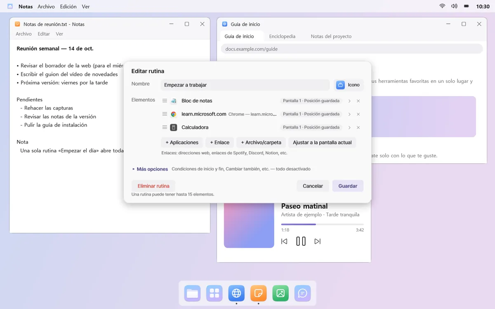
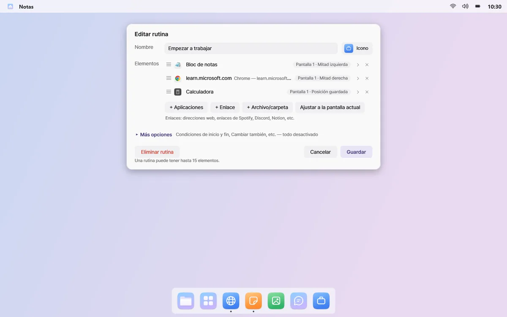
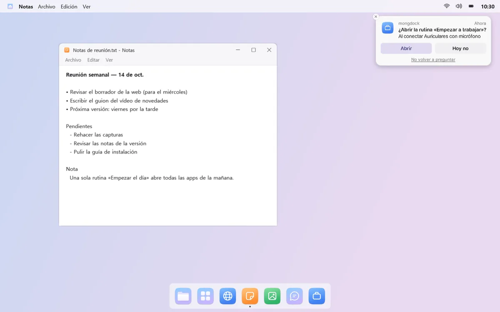

Abre tus apps de cada día de una vez
Agrupa en una rutina las apps, enlaces y juegos que usas juntos. Haz clic y se abren en un nuevo escritorio, cada uno en su sitio. Termínala y solo se cierran esas ventanas.
Por ejemplo, haz clic en «Empezar a trabajar» y tu correo, navegador y documentos se abren en las pantallas y los sitios que elegiste.
Todo se abre en su sitio
Haz clic en una rutina y se abre un nuevo escritorio virtual con cada app en la pantalla y el sitio que elegiste, ya sea a pantalla completa o en la mitad izquierda. La barra de menús muestra el nombre de la rutina y también puede mostrar cuánto tiempo llevas en ella.


Guarda la pantalla que ya tienes
Coloca tus ventanas como quieras y elige «Guardar pantalla como rutina…». Listo. mongdock también puede notar qué apps abres a menudo juntas y sugerirte una rutina.




Apps, enlaces y juegos
Mezcla en una rutina apps, enlaces que abren varias pestañas y archivos o carpetas. Añade también juegos y lanzadores de Steam, Epic o GOG, y se inician en cuanto se abre la rutina.

Pregunta en el momento justo
Conecta unos auriculares o una pantalla, enciende el PC, llega el día y la hora que fijaste o abre una app concreta, y mongdock te pregunta: «¿Abrirla?». Como mucho una vez al día por condición. De forma predeterminada, las rutinas solo se abren cuando haces clic.

Terminar es igual de limpio
«Terminar rutina» cierra solo las ventanas que abrió la rutina y deja todo lo demás como estaba. Si la rutina cambió la salida de sonido, el volumen, No molestar o la ocultación automática del Dock, al terminarla vuelven a como estaban.
Las condiciones de inicio y fin y otras opciones están en «Más opciones» del editor, todas desactivadas de forma predeterminada.
Conviene saber
- Las apps de una sola ventana (como Discord) no se vuelven a abrir si ya están en marcha. mongdock te dice en qué escritorio están.
- Las ventanas que preguntan si quieres guardar se quedan abiertas al terminar una rutina.
- Si mongdock se reinicia después de abrir una rutina, no puede saber qué ventanas abrió la rutina, así que tendrás que cerrarlas tú.